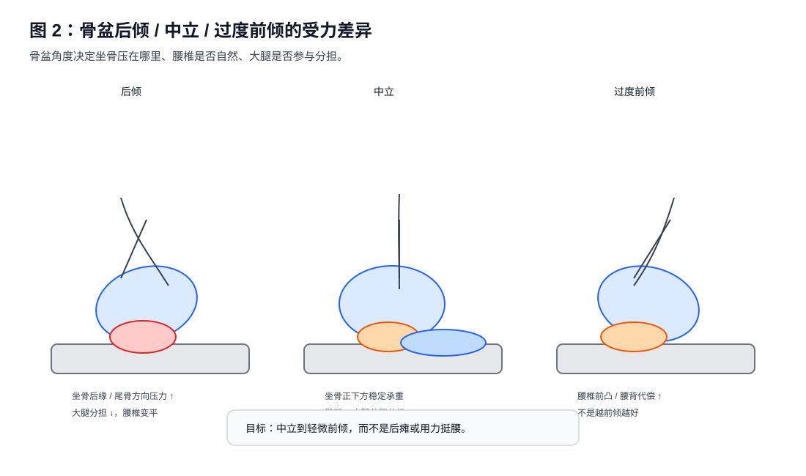
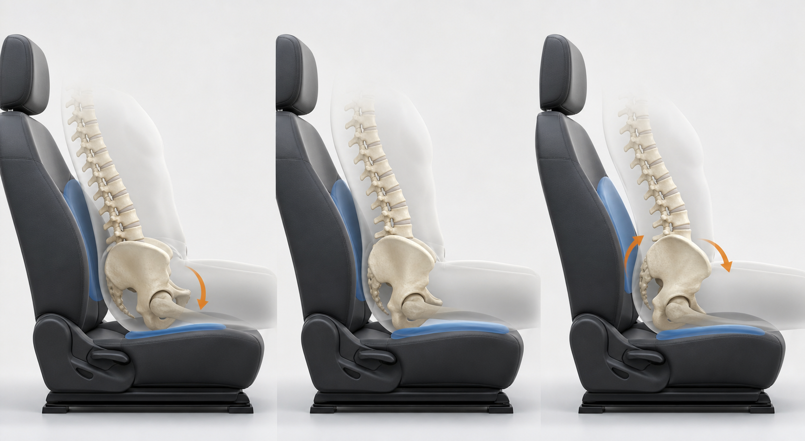

第二章 骨盆决定受力¶
本章核心观点：驾驶坐姿中，骨盆不是一个被动摆放的骨架，而是上半身重量、腰椎曲度、坐骨受力、大腿承重和踏板控制之间的“力学中转站”。大多数坐姿不适，最终都能回到骨盆位置上解释。
2.1 为什么骨盆是驾驶坐姿的核心¶
人在驾驶时，看似是“坐在座椅上”，实际上身体重量会沿着一条明确的路径传递：
头部 / 胸廓 / 腹部
↓
脊柱
↓
骨盆
↓
坐骨 + 臀部软组织 + 大腿后侧
↓
座椅
骨盆处在这条传力路径的中间。它上接脊柱，下接髋关节和大腿，同时又通过坐骨与座椅接触。因此，骨盆角度一变，至少会同时改变四件事：
- 坐骨的实际受力部位：压在坐骨结节正下方，还是偏向坐骨后缘、尾骨方向。
- 大腿后侧是否参与承重：大腿是被座椅托住，还是基本悬空，或者被前沿顶住。
- 腰椎曲度是否自然：腰椎是保持自然小弧，还是被压平，或者被迫过度前凸。
- 右腿踩踏板时是否需要额外稳定：骨盆不稳时，右腿不仅要踩踏板，还要参与稳定身体。
所以，很多人把问题理解成“座椅高低不合适”“靠背角度不合适”“大腿被压”，但更底层的问题常常是：
骨盆没有落在一个稳定、可持续、受力分散的位置。
2.2 骨盆的三种典型姿态¶
驾驶坐姿中，骨盆可以简化为三种状态：
- 骨盆后倾；
- 骨盆中立；
- 骨盆过度前倾。
这三种状态没有绝对的好坏。问题在于：哪一种能在驾驶这个特定场景下，长期保持较低的峰值压强和较小的肌肉代偿。

下图用更接近真实座椅的侧视场景表达同一件事：骨盆角度不是孤立变量，它会同时改变腰背贴合、坐骨落点和大腿承托。

2.3 骨盆后倾：最常见，也最容易造成坐骨后缘压力¶
骨盆后倾时，身体通常表现为：
- 腰椎变平；
- 胸口略塌；
- 身体像“窝”在座椅里；
- 臀部向前滑或向后瘫；
- 坐骨受力偏向后方；
- 大腿后侧分担减少；
- 尾骨方向压力增加。
简化侧视图：
骨盆后倾
胸背
\\
\\
\\____
骨盆向后卷
受力特点：
坐骨后缘 ↑↑↑
尾骨方向 ↑
大腿分担 ↓
腰椎曲度 ↓
后倾不是“坐骨不承重”，而是坐骨承重的位置偏后了。坐骨结节本来就是坐姿下合理的骨性承重点，但当骨盆后倾时，压力容易从坐骨结节正下方滑向：
- 坐骨后缘；
- 尾骨方向；
- 臀部较薄软组织区域。
这些地方软组织覆盖相对薄，耐压能力更差，因此更容易出现坐骨后方疼、尾骨附近不舒服、一坐久就出现局部硬点、下车后短时间缓解。
从压力分布看，后倾状态常见的问题是：
合理分散：
臀部 + 坐骨 + 大腿后侧
后倾集中：
坐骨后缘 + 尾骨方向
也就是说，后倾不一定马上疼，但它会提高局部峰值压强，让疼痛更容易在 20 到 60 分钟内累积出来。
2.4 骨盆中立：驾驶坐姿的目标区间¶
骨盆中立并不是一个精确到某个角度的点，而是一个区间。它的特点是：
- 腰椎有自然小弧；
- 坐骨正下方有稳定承重；
- 臀部和大腿后侧共同分担重量；
- 上身可以被靠背接住；
- 不需要刻意挺腰；
- 右脚踩踏板时身体不会随之晃动。
简化侧视图：
骨盆中立
胸背
|
|
___|___
骨盆稳定
受力特点：
坐骨结节正下方 ↑↑
臀部软组织 ↑↑
大腿后侧 ↑
尾骨方向 ↓
腰椎自然小弧
中立坐姿的关键不是“坐得很直”，而是：
骨盆稳定，脊柱自然，压力分散。
很多人误以为人体工程学坐姿应该像军姿一样挺拔。实际上，驾驶坐姿不要求胸部刻意抬高，也不要求腰背持续用力。真正合理的状态是：
- 身体被座椅支撑；
- 背部可以贴合靠背；
- 腰部不是被硬顶，而是被接住；
- 肩膀自然下沉；
- 手臂轻松够到方向盘；
- 坐骨有承重，但不是尖锐的单点压痛。
2.5 过度前倾：不是后倾的反义词，也不是越前倾越好¶
有些人在意识到自己后倾后，会刻意挺腰、撅臀，让骨盆大幅前倾。这样短时间可能感觉“坐正了”，但长时间驾驶并不理想。
过度前倾常见表现：
- 腰椎过度前凸；
- 腰背肌持续紧张；
- 腹部向前顶；
- 髋前侧紧；
- 臀部后上方紧；
- 右腿踩踏板时髋部不放松。
所以，本书不建议追求“明显前倾”。目标是：
中立到轻微前倾，而不是用力挺腰。
对于驾驶而言，骨盆过度前倾和骨盆后倾一样，都可能造成新的不适。前者更多表现为腰背劳损、髋前侧紧张；后者更多表现为坐骨后缘压痛、尾骨方向不适、大腿分担不足。
2.6 “蜷缩在座椅里”到底对不对¶
驾驶者经常会说：
“我现在像是整个人蜷缩在座椅里。”
这句话本身不能判断对错。必须区分两种情况。
第一种：合理包裹¶
如果满足以下条件，这种“蜷缩”更接近合理包裹：
- 臀部坐到座椅深处；
- 腰和靠背基本贴合；
- 肩膀也能自然接触靠背；
- 胸部没有明显塌陷；
- 下巴没有明显前伸；
- 坐骨承重稳定；
- 大腿后侧有承托；
- 不需要用腹部或腰背持续发力维持姿势。
这种状态看起来不一定很挺拔，但它是放松且被支撑的。
第二种：错误塌陷¶
如果出现以下情况，就是不良蜷缩：
- 骨盆明显后卷；
- 腰椎完全变平；
- 胸口塌陷；
- 下巴前伸；
- 方向盘距离太远，肩膀被拉走；
- 坐骨后缘或尾骨方向疼；
- 大腿后侧不参与分担；
- 开久后身体慢慢向前滑。
因此，判断姿势是否合理，不应只看“直不直”，而要看：
骨盆是否稳定，腰背是否自然被接住，压力是否分散。
2.7 靠背角度如何影响骨盆¶
靠背角度是影响骨盆的重要变量。
靠背太躺¶
靠背太躺时，身体容易向后下方滑移。此时骨盆很容易后倾，坐骨压力偏向后缘。表现为：
- 坐着像躺着；
- 腰椎变平；
- 尾骨方向压力增加；
- 踩踏板时右腿需要更多稳定；
- 长时间后坐骨后方更容易疼。
靠背太直¶
靠背太直时，问题可能反过来：
- 身体需要主动维持；
- 腰背肌持续紧张；
- 肩颈不容易放松；
- 如果方向盘没拉近，身体会前探；
- 如果腰托过强，可能把骨盆向前推。
合理靠背¶
合理靠背不是一个绝对角度，而是满足以下条件：
- 背部能自然贴合；
- 肩膀不用离开靠背去够方向盘；
- 腰部有支撑但不被顶；
- 骨盆不后倒；
- 坐骨不出现后缘压痛；
- 右腿踩踏板时身体不跟着晃。
对于很多驾驶者，靠背略直比过度后躺更容易维持骨盆中立。但“略直”不等于垂直，也不等于需要持续挺腰。
2.8 腰托的作用：接住，而不是硬顶¶
腰托经常被误用。正确顺序应该是：
先把骨盆摆到接近中立
↓
腰椎出现自然小弧
↓
再让腰托接住这个小弧
错误顺序是：
骨盆仍然后倾
↓
直接把腰托打满
↓
腰托顶不进腰窝
↓
整个人被往前推
如果驾驶者本身腰背较平、骨盆后倾明显，原厂气囊腰托可能会出现一个问题：
它不是填进腰窝，而是顶住整个腰背，把身体往前推。
这时大腿根部压力、坐骨侧边挤压、身体前滑感都可能增加。
因此，腰托不是解决骨盆问题的主力。它只能在骨盆已经接近合理位置时，提供辅助支撑。
2.9 座椅高度如何影响骨盆¶
座椅高度改变的是髋关节与膝关节的相对位置。
座椅偏低¶
常见影响：
- 髋关节低于膝关节；
- 大腿相对抬高；
- 骨盆更容易后倾；
- 坐骨后缘压力增加；
- 大腿根或髋部空间变小；
- 踩踏板时腿部角度受限。
座椅适当升高¶
可能带来：
- 髋部略高于膝部；
- 骨盆更容易回到中立；
- 大腿后侧参与承重；
- 坐骨峰值压强下降；
- 坐骨两侧软组织挤压可能减轻。
座椅过高¶
可能带来：
- 大腿后侧持续受压；
- 腘窝或神经血管受压风险增加；
- 脚跟支点不稳定；
- 踩踏板需要更多脚踝或小腿代偿；
- 大腿后侧出现紧、硬、麻、刺。
所以，座椅高度不是越高越好。它有一个目标区间：
髋部略高或接近膝部，大腿有承托，脚跟能稳定落地，踩刹车到底时膝盖仍保留弯曲。
2.10 前沿高度如何影响骨盆和大腿¶
前沿高度主要影响大腿后侧接触面积。
适当抬高前沿时：
- 大腿后侧接触增加；
- 坐骨单点压强下降；
- 大腿与坐垫接触更连续；
- 臀部不再只靠坐骨局部承重。
但前沿过高时：
- 大腿根压力可能明显；
- 大腿后侧持续紧硬；
- 腘窝方向压力增加；
- 右腿踩踏板更累；
- 大腿后侧可能出现麻刺。
因此，前沿高度的目标不是“越托越好”，而是：
让大腿参与分担坐骨压力，但不形成新的大腿后侧压迫。
2.11 骨盆中立的自测方法¶
方法一：硬椅坐骨感知¶
坐在较硬的椅子上，双手垫在臀下，摸到两块坐骨。
然后做小幅骨盆前后摆动：
- 骨盆向后卷：感觉坐骨往后滚，腰椎变平；
- 骨盆向前转：感觉腰明显挺起，坐骨位置前移；
- 在两者中间找到一个不用力的位置。
目标感觉：
- 两块坐骨正下方稳定；
- 腰部有自然小弧；
- 不需要挺胸；
- 呼吸自然；
- 臀部不是夹紧状态。
方法二：车内停车自测¶
车辆静止时，坐好后双手轻轻离开方向盘。观察：
- 身体是否自然被靠背接住；
- 是否会向前塌；
- 是否需要腹肌持续用力；
- 腰背是否能保持自然接触；
- 坐骨是否出现后方压痛。
如果一离开方向盘，身体就要向前塌，说明靠背、方向盘或骨盆位置可能不合理。
方法三：30 分钟受力回看¶
驾驶 30 分钟后记录最先出现的不适：
| 最先出现的位置 | 可能提示 |
|---|---|
| 坐骨后方 / 尾骨方向 | 骨盆后倾或靠背太躺 |
| 坐骨正下方小点 | 接触面积不足、峰值压强高 |
| 大腿根横向压迫 | 前沿或座椅前后位置需检查 |
| 大腿后侧麻刺 | 高度/前沿/硬边可能压迫 |
| 右腿明显紧硬 | 踏板控制负荷 + 腿部几何问题 |
2.12 工程验证：不要凭当天感觉下结论¶
骨盆姿态调整后，身体需要适应新的受力分布。新的压力感不一定是坏事，也不一定是好事。必须用时间验证。
建议每次只改变一个变量：
第 1 次驾驶：记录 5 / 30 / 60 分钟
第 2 次驾驶：确认是否重复出现
第 3 次驾驶：决定保留还是回退
记录内容：
- 坐骨单点疼是否减少；
- 坐骨两侧软组织挤压是否减少；
- 大腿后侧是否只是有压力，还是出现麻刺；
- 腰背是否贴合但不被硬顶；
- 右腿踩踏板是否自然；
- 下车后是否快速缓解。
2.13 本章小结¶
骨盆决定了驾驶坐姿中的受力方向。
- 骨盆后倾时，压力容易集中到坐骨后缘和尾骨方向。
- 骨盆中立时，坐骨、臀部和大腿后侧更容易共同承重。
- 骨盆过度前倾并不是理想状态，它可能造成腰背和髋前侧负担。
- 靠背、腰托、高度、前沿、方向盘都会间接影响骨盆。
- 合理驾驶坐姿不是“坐得笔直”，而是“骨盆稳定、腰背被接住、压力分散”。
下一章将进入坐骨与软组织本身：为什么坐骨承重是正常的，但坐骨单点压痛、两侧软组织挤压和大腿后侧紧硬需要分开分析。